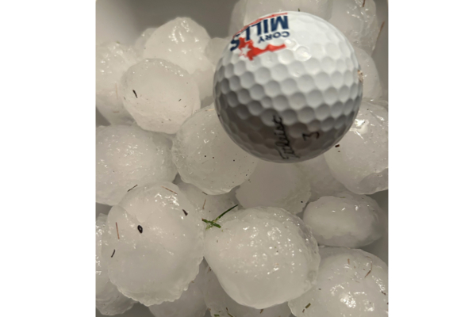

8月5日晚间，暴雨和棒球大小冰雹袭击卡尔加里西北。(王颖／） 【2024年08月07日讯】（记者陈安编译报导）8月6日（周二）早上，亚省各相关机构将对8月5日晚上给卡尔加里和亚省其它地区带来强烈冰雹和降雨的风暴造成的损失进行评估。加拿大环境部气象学家希瑟·皮米斯肯（Heather Pimiskern）表示，卡城西北部发生的一场风暴很快就变得非常强烈。
“其中一些是从卑诗省来的，这意味着，当它进入亚省时，大气条件就为风暴变得严重做好了准备。”
亚省紧急警报最初于晚上7点57分发布，几分钟后省南部部分地区遭遇暴雨和棒球大小冰雹的袭击。
该机构建议人们在出现危险天气时寻求庇护。
皮米斯肯8月5日晚上表示，该机构从卡城收到的最大冰雹尺寸报告的直径约为4.5厘米，大约相当于高尔夫球的大小。
卡城机场受损
在8月5日晚间，卡尔加里机场管理局发言人证实，卡城国际机场国内航站楼因冰雹和强降雨而受损。
声明中写道：“我们正在优先考虑所有客人和员工的安全，并清理受影响的区域。我们目前正在评估损失及其对营运的影响。”并补充说，目前尚未报告受伤情况。
发言人表示，机场预计因受损情况，进出港航班将出现延误，建议旅客联络航空公司确认航班状态。
8月6日凌晨1点左右，机场管理局在社交媒体上发文称，国内航站楼的部分区域将继续关闭，直至另行通知，并补充说清理水和评估风暴造成的损失的工作已经开始。
来自韩国的游客张女士计划来落基山旅游，飞机因机场关闭而取消。她不得不重新计划行程。
卡尔加里西北区损失惨重
冰雹和暴雨给卡尔加里西北区造成严重损失，8月6日早晨市政府的维修车辆出现在破坏严重的社区，进行紧急维护。
很多房屋和停泊在户外的车辆受损。保险公司的服务热线一直处于繁忙状态。家住在机场附近的赵女士表示，停在户外的两辆车受损，其中一辆车的天窗被冰雹砸破，车内进水。一个房屋和车库的外墙全是洞。邻居家也是类似情况。
责任编辑：齐守善